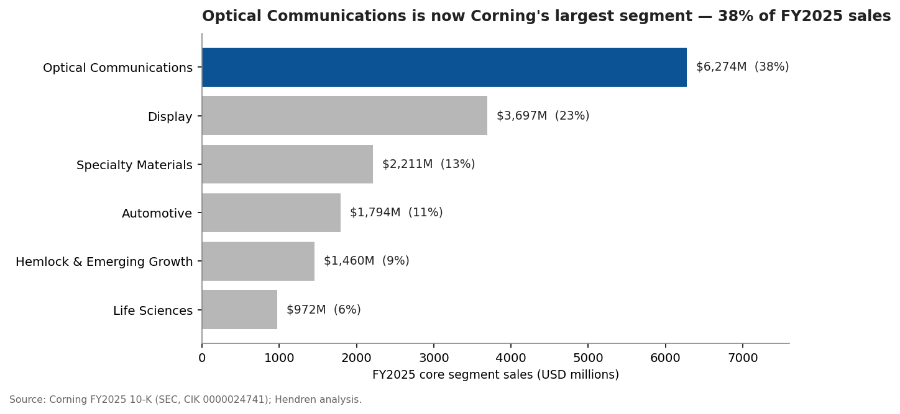
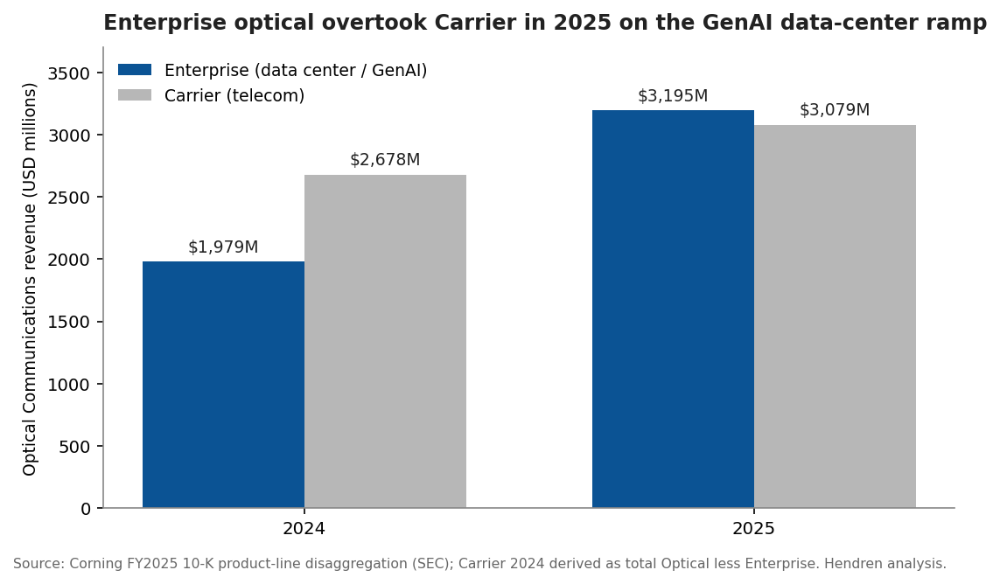
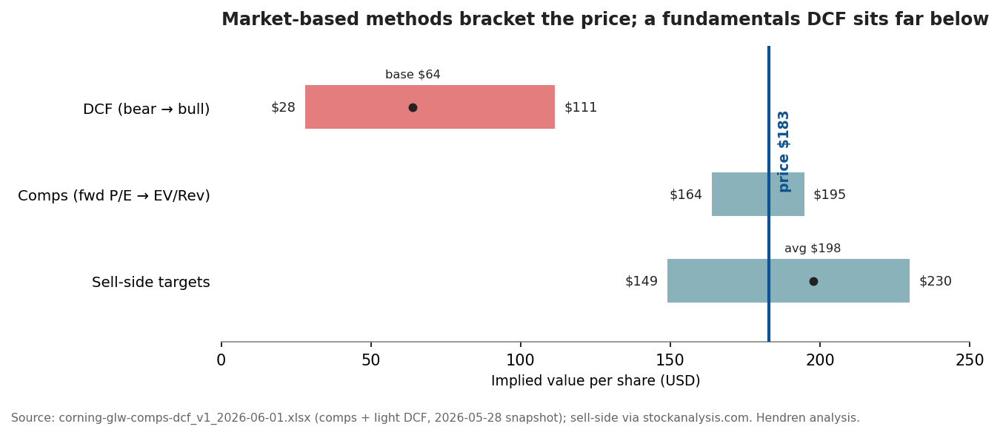

The long-form companion to the GLW one-pager: segment mix, the optical-fiber franchise, the hyperscaler agreements and NVIDIA partnership driving the re-rating, and the bull/bear debate around a stock that has roughly doubled in a year.
This primer orients a smart finance reader — fluent in numbers, new to the name — to Corning Incorporated (NYSE: GLW), a 175-year-old specialty-glass and optical-physics company that has quietly become one of the largest passive-optical suppliers to the AI data-center buildout. The question it answers: what is Corning, how does it actually make money, and why does a materials company belong in an AI-infrastructure thesis? After reading, you should be able to hold your own on Corning’s segment mix, its optical-fiber franchise, the hyperscaler agreements driving its re-rating, and the bull/bear debate around a stock that has roughly doubled in a year.
Corning is a components-and-materials supplier, not a finished-goods maker: it sells the glass, ceramic, and optical-fiber building blocks that go inside other companies’ products.
Corning was incorporated in New York in 1936, tracing its glass business to 1851, and renamed from Corning Glass Works in 1989 1. It runs three core technical competencies — specialty glass, ceramics, and optical physics — and sells the components that go inside someone else’s system: optical fiber and cable into telecom carriers and hyperscale data centers; glass substrates into LCD panel makers; tough cover glass into smartphone OEMs and, increasingly, the semiconductor industry; ceramic substrates and filters into automakers; glass vials into pharma; and polysilicon into the solar supply chain. It is roughly 67,200 employees across 44 countries, headquartered in Corning, New York, with a December fiscal year-end 1.
Because Corning sits one layer below the brand-name product, its fortunes track the capital cycles of its customers — telecom and data-center capex, TV and IT-panel demand, smartphone units, auto production, and (newly) US solar policy. That is the lens for everything that follows: Corning is a picks-and-shovels play, and the pick that matters most right now is optical fiber for AI.
Five reportable segments (solar/polysilicon and other ventures sit in an “all-other” Hemlock & Emerging Growth group), but two — Optical Communications and Display — produce the bulk of profit; Optical is now both the largest and the fastest-growing.
For fiscal 2025 (the audited full-year basis in the 10-K), Corning reported on a core-sales basis — its non-GAAP measure that translates non-dollar revenue at hedged constant-currency rates to neutralize the large swings from its yen and won hedging program (defined fully in §5). Core sales totaled $16,408M 11, which reconciles to GAAP net sales of $15,629M 1 through a ~$779M constant-currency adjustment. The segment split (FY2025 core sales):
| Segment | FY2025 core sales | % of total | What it makes |
|---|---|---|---|
| Optical Communications | $6,274M 1 | 38% | Optical fiber, cable, and connectivity for carriers + data centers |
| Display | $3,697M 1 | 23% | Glass substrates for LCD/OLED panels |
| Specialty Materials | $2,211M 1 | 13% | Gorilla Glass (mobile) + advanced optics/glass for semiconductors |
| Automotive | $1,794M 1 | 11% | Ceramic emissions substrates/filters + automotive glass |
| Life Sciences | $972M 1 | 6% | Lab glassware, drug-packaging glass |
| Hemlock & Emerging Growth | $1,460M 1 | 9% | Polysilicon/solar, pharma-glass tubing, new ventures |

A reporting note that matters for anyone reading the most recent quarter: effective Q1 2026 Corning recast its segments — combining Display and Specialty Materials into a new “Glass Innovations” segment and breaking Solar out as its own standalone segment. On that new basis, Q1 2026 ran Optical Communications $1,846M 2, Glass Innovations $1,420M 2, Automotive $437M 2, Solar $370M 2, and Life Sciences & Emerging Growth $272M 1. The economics are unchanged; only the buckets moved. This primer uses the FY2025 reportable-segment basis for the full-year mix and flags the new structure where the quarterly data requires it.
Old flow: Corning’s optical business was a slow-growth telecom-carrier supplier. New flow: hyperscaler AI data centers are now the dominant driver, and Enterprise revenue has overtaken Carrier for the first time. What changed: Enterprise optical revenue went from $1,979M in 2024 to $3,195M in 2025 — up 61% in a year.
Optical Communications splits into two product lines. Carrier is the legacy telecom business — fiber and cable sold to network operators for last-mile and long-haul. Enterprise is the data-center business — the dense fiber, cable, and connectivity that wire servers, switches, and buildings together inside and between hyperscale campuses. For FY2025, Carrier was $3,079M (+15%) 1 and Enterprise was $3,195M (+61%) 1, so Enterprise surpassed Carrier for the first time 1. Corning’s 10-K is explicit that Enterprise growth is driven by generative-AI data-center demand, while Carrier growth comes from fiber-to-the-home and data-center-interconnect buildout — not primarily AI 1. Total Optical was $6,274M, up 35% 1, and the segment threw off $1,048M of net income 1 — Corning’s single largest profit pool.

Why AI consumes so much fiber. A generative-AI training cluster connects tens of thousands of accelerators (GPUs) that must exchange data continuously; that fan-out requires vastly more optical interconnect per unit of compute than a traditional server hall. Citi estimates $500–1,000 of optical content per AI accelerator 1 and, citing the Fiber Broadband Association, sees US hyperscale fiber-mile demand more than doubling — 159M fiber-miles (2024) to 373M by 2029, ~2.3× 1. Corning’s GenAI product line is purpose-built for this: a new high-density fiber-and-cable system that fits 2–4× more fiber into existing conduit 1.
The hyperscaler agreements — what is actually contracted vs. what is inferred. This is where discipline matters. Corning has disclosed three concluded multiyear Enterprise agreements with hyperscalers 11. The anchor is Meta, which committed to pay Corning up to $6 billion through 2030 for fiber, cable, and connectivity 3. Two additional hyperscalers signed agreements that management describes as “similar in size and duration” to Meta’s 4 — but the customers are unnamed and no aggregate backlog figure has been disclosed. A widely-cited ~$18B implied total (3 × ~$6B) is an analyst inference, not a company number, and the $6B itself is a ceiling, not a contracted minimum 1. The honest statement is: one disclosed up-to-$6B anchor plus two comparable undisclosed deals — enough, with the NVIDIA partnership below, to drive a multi-plant US capacity expansion.
The NVIDIA partnership is separate — and strategically distinct. In May 2026 Corning announced a multiyear partnership with NVIDIA to expand US optical-connectivity manufacturing ~10×, lift US fiber capacity >50%, and build three new advanced facilities in North Carolina and Texas 5661. This anchors a brand-new growth vector Corning calls the Photonics Market-Access Platform (MAP) — co-packaged-optics fiber connectivity sold directly to GenAI OEMs — targeted at a $10B revenue stream by 2030 71. Corning describes NVIDIA’s commitment as directly fueling this expansion 1; no specific funding amount, cost-share, or government grant has been disclosed.
Where Corning sits in the stack — and why co-packaged optics is a tailwind, not a threat. Corning is a passive-optical supplier: fiber, cable, connectors, MPO/MTP connector systems, and fiber-attach hardware — the parts with no electronics in them. The active layer — the transceivers, lasers, and photonic chips that turn electrons into light — belongs to Coherent, Lumentum, and Ciena, not Corning 1. Co-packaged optics (CPO) — the next-generation design that moves the optical engine onto the switch package itself — is widely framed as disruptive to active component makers, but for Corning it is a tailwind: CPO still needs downstream fiber attach and connectorization, and moving “scale-up” GPU-to-GPU links (today nearly all copper) onto optics would be net-new fiber demand 1. Corning is inside NVIDIA’s CPO ecosystem alongside TSMC, Coherent, and Lumentum. Notably, Corning does not include meaningful scale-up optical revenue in its Springboard plan through 2028 1 — it is an explicit upside option, and management flagged in Q1 2026 that the probability of a near-term scale-up contribution has risen 1.
Corning is the share leader in both optical fiber and display glass — oligopoly markets — and competes only at the edges of the high-multiple “active optics” names.
In display glass substrate, Corning is #1 at roughly 24% share, ahead of AGC (~18%) and Nippon Electric Glass (~12%); the top five hold ~95% — a clean oligopoly 89. In optical fiber, the top five manufacturers hold >40% of the global premium market and Corning is a top-two global player and the North American leader 10. (One figure to handle carefully: a “4.26% global fiber-cable market share” appears in vendor data 11 — that is a denominator artifact of a fragmented market with hundreds of small regional cablers, not a sign of weakness; Corning is named #1 in that same dataset.)
The peer set falls into three buckets, and only some genuinely compete with Corning:
That positioning — share-leading in two oligopolies, with the fastest-growing slice (data-center optical) — is the spine of the bull case.
Double-digit revenue growth, expanding ~20% core operating margins, solid free cash flow, an investment-grade balance sheet, and a capital-return policy tilted to buybacks and a ~0.6%-yield dividend.
Growth and margins. FY2025 GAAP net sales were $15,629M, up ~19% 11; core sales grew ~13% to $16,408M 11. GAAP operating income was $2,279M (14.6% margin) 11; on Corning’s core basis, operating margin was 19.3% 1, up toward its 20% target. GAAP diluted EPS was $1.83 1; core EPS was $2.52, up ~29% 11. Momentum carried into Q1 2026: GAAP sales $4,144M 1, core sales $4,345M (+18%) 12, core operating margin 20.2% 12, and core EPS $0.70 (+30%) 12.
A word on “core.” Corning runs a large currency-hedging program (mainly Japanese yen and Korean won) and reports core performance measures that translate hedged revenue at constant rates and strip certain items. Core sales run above GAAP (the ~$779M FY2025 gap) precisely because the hedges smooth out dollar strength. Management guides and frames Springboard on the core basis, so the core numbers are the ones that drive the narrative — but a careful reader keeps both in view.
Cash and balance sheet. FY2025 operating cash flow was $2,695M against $1,282M of capex, for ~$1,413M of free cash flow 111 (or $1,720M on Corning’s adjusted-FCF basis 1). At March 31 2026, Corning held $1,755M cash against $8,973M total debt, for net debt of $7,218M 111 — comfortably investment-grade against ~$3.9B of LTM EBITDA, with a long ~20-year average debt maturity. The dividend is $1.12/share annualized 13 (~0.6% yield); buybacks are the primary cash-return lever, though Q1 2026 had none as cash funded the capacity ramp.
Capacity is the near-term cash story. Corning guides FY2026 capex to ~$1.7B and notes it may be exceeded 11 as it builds the NVIDIA/Meta-anchored US fiber and connectivity plants. Elevated capex is the price of the optical growth option.
On the connectivity peer set, Corning trades at a premium to the copper names and roughly in line with the optical pure-plays on forward earnings. Even a bull-case DCF on management’s Springboard trajectory lands below the current price; it is the comps and the sell-side targets that bracket it. The stock is priced for the ramp to deliver.
All figures here tie to the linked model, corning-glw-comps-dcf_v1_2026-06-01.xlsx (comps + light DCF), as of a 2026-05-28 market snapshot; treat the output as indicative, not a price target.
At ~$183/share and a ~$157B market cap 1413, Corning trades at ≈54× next-twelve-months consensus earnings 14 — or ~67× on a narrower FY2026 calendar-earnings basis 15 — and ~88× trailing 14. The stock has roughly doubled over twelve months and pulled back from a ~$208–212 mid-May high. Two valuation lenses point in different directions.
Relative (comps) — brackets the price. Against the connectivity peer set (APH, TEL, CIEN, LITE, COHR), GLW’s ~10.2× EV/Revenue sits just under the peer median of 10.9×; applying that median to GLW’s revenue implies ~$195/share (≈ +6%). On forward P/E, the peer median is 48.6× versus GLW’s 54×, implying ~$164/share (≈ −10%) — i.e., GLW carries a modest premium on earnings. (Trailing EV/EBITDA is unusable for the optical pure-plays — CIEN ~144×, LITE ~131× — because their LTM EBITDA is still recovering against sharp share-price runs; the forward lens is the honest one.) On market multiples, then, fair value brackets the current price at roughly $164–195 (model Outputs tab).
Intrinsic (DCF) — sits well below. A disciplined five-year unlevered-free-cash-flow DCF on Corning’s core fundamentals produces a base case of only ~$64/share (WACC 9.0%, terminal growth 3.0%), a bear of ~$28 (WACC 10.0%, 2.0%), and a bull of ~$111 (WACC 8.5%, 4.0%) — the bull approximating management’s Springboard trajectory (model Scenarios tab; each case moves the discount and terminal-growth assumptions together with the operating drivers). Every DCF scenario lands below the $183 price. That is not a claim Corning is “worth $64” — it is the model quantifying how much of the price rests on the GenAI-optical ramp and a momentum multiple rather than on cash already in hand: to reproduce $183 a DCF needs sustained mid-teens growth for a decade plus a terminal multiple well above what even the bull case’s assumptions permit.
The tension, stated plainly. Market-based methods cluster around the price — comps at $164–195, and a sell-side consensus of Buy, average target $197.67 (range $149–$230) 15, with post-investor-day raises to $225 (Citi) 16 and $210 (Oppenheimer) 1 anchored to a CY2028 EPS bridge near $5.10 1. Intrinsic cash-flow methods sit well below it. Corning’s valuation is, in effect, a referendum on whether the GenAI optical super-cycle is durable enough to justify a multiple that discounted cash flows do not support.

The debate is not “is the AI optical story real” — it is “is it already in the price,” plus three structural risks that predate AI.
Risks.
- Valuation / expectations. At ~54× forward earnings 14, much of the Springboard ramp is already discounted; JPMorgan downgraded the stock on valuation, arguing investors must “dial forward to calendar 2028 earnings” and that the near-term Meta benefit is “muted by most of the existing capacity being spoken for” 11. The stock was +65% YTD into the downgrade 1.
- Display / China. Display is a secularly declining-volume, China-exposed business; Q1 2026 display glass volume fell and Citi models PC units −15% and smartphone units −17% for 2026 11. TFT-LCD glass demand is modeled down ~2% in 2026 1. Profit has held flat on price/mix and the yen hedge 11, but the volume direction is down.
- Customer concentration. A handful of customers drive each segment — top three are ~59% of Display and ~61% of Automotive, and the top two ~28% of Optical 1. The hyperscaler deals concentrate Optical further.
- Solar policy dependence. Corning built the largest US solar-wafer/polysilicon capacity specifically to capture domestic-content and manufacturing tax incentives; a subsidy or tariff reversal is the key downside, and the wafer ramp is already running behind plan (a ~$30M / ~$0.07-EPS Q2 drag) 111.
- Cyclicality + capital intensity + FX. Optical/telecom carrier capex is cyclical 1; Corning is capital-intensive with capex that “may be exceeded” 1; and a large share of sales, costs, and cash flow is non-dollar 1.
Catalysts to watch. The next Q2 2026 print (late July) — watch the solar-wafer recovery and the Optical run-rate 1; incremental hyperscaler/OEM deal announcements 1; execution of the 10× US optical-connectivity capacity ramp (and the >50% fiber-capacity expansion) under the NVIDIA partnership 1; display pricing renewals 1; and US solar policy 1.
Corning is the cleanest public, passive-optical way to own the AI data-center fiber buildout. Where the active-optics names (Coherent, Lumentum, Ciena) carry transceiver-cycle risk and triple-digit trailing multiples, Corning pairs a share-leading fiber-and-connectivity franchise with a diversified, cash-generative base (display, specialty, auto, life sciences) that funds the optical capacity ramp. The thesis is concentrated in one line of the model: Enterprise optical revenue, $3,195M in 2025 and growing 61% 11, plus the option value of three hyperscaler agreements (anchored by Meta’s up-to-$6B 3) and the NVIDIA-anchored Photonics MAP ($10B targeted by 2030 7). The comps + DCF model (corning-glw-comps-dcf_v1_2026-06-01.xlsx) is the source of truth for the valuation; this primer’s job is to make the optical story legible. Within the AI-infrastructure thesis, Corning sits beside the broader networking-interconnect primer (2026-05-25) as the connectivity-layer beneficiary of the same hyperscaler capex the BOM and data-center-capex models size.
Counter-thesis (JPMorgan, April 2026): the AI optical ramp is real but already in the price. At ~67× forward earnings (FY2026 calendar-earnings basis), the stock discounts most of the Springboard plan; the near-term Meta benefit is “muted by most of the existing capacity being spoken for,” and investors are forced to “dial forward to calendar 2028 earnings” to justify the multiple 1115. Layer on a secularly shrinking, China-exposed Display business and a solar bet dependent on US policy that is already running behind plan, and the risk/reward at a doubled share price is far less obvious than the headline AI narrative suggests.
Primary financials are SEC EDGAR (Corning CIK 0000024741: FY2025 10-K filed 2026-02-12; Q1 2026 10-Q filed 2026-05-01); the Q1 2026 results and Springboard/Meta/NVIDIA disclosures are Corning press releases and the Q1 2026 earnings call; peer comps are stockanalysis.com market data as of 2026-05-28/29; sell-side framing is Citi, JPMorgan, and Oppenheimer.
Corning FY2025 10-K (SEC EDGAR), Item 1 Business — “Corning's glass business was established in 1851; the present corporation was incorporated in the State of New York in December 1936; the name was changed from Corning Glass Works to Corning Incorporated on April 28, 1989.” Filed 2026-02-12. ↩↩↩↩↩↩↩↩↩↩↩↩↩↩↩↩↩↩↩↩↩↩↩↩↩↩↩↩↩↩↩↩↩↩↩↩↩↩↩↩↩↩↩↩↩↩↩↩↩↩↩↩↩↩↩↩↩↩↩↩↩↩↩↩↩↩↩↩↩↩↩↩↩↩↩↩↩
Corning “Optical Communications segment net sales (new segment structure, GAAP-consistent), Q1 2026.” Corning Q1 2026 results and segment-recast announcement, 2026-04-28. ↩↩↩↩
Corning “Meta multiyear fiber/cable/connectivity agreement size (up to $6B).” Corning–Meta press release, 2026-01-27 · corning.com; up-to-$6B figure restated verbatim on the Corning Q1 2026 earnings call (2026-04-28). ↩↩
Corning “Two additional hyperscale customers signed large long-term agreements similar in size and duration to Meta.” Corning Q1 2026 results release / earnings call, 2026-04-28 · investor.corning.com. ↩
NVIDIA–Corning press release “Corning to expand US optical-connectivity capacity ~10x.” 2026-05-06 · nvidianews.nvidia.com (mirror: businesswire.com). ↩
NVIDIA–Corning press release “US fiber production capacity expansion (>50%).” 2026-05-06 · nvidianews.nvidia.com. ↩↩
Corning “Photonics Market-Access Platform — targeted revenue stream by 2030 (new GenAI OEM platform).” Corning Springboard upgrade press release, 2026-05-06 · corning.com. ↩↩
“Display glass substrate global market share.” Dataintelo, TFT-LCD glass substrate market report, 2023-07-20 · dataintelo.com. ↩
“Top-5 manufacturers’ combined share of global display glass substrate.” Infinity Market Research, glass substrates for displays market, 2025-12-23 · infinitymarketresearch.com. ↩
“Top-5 manufacturers’ combined share of global pure optical fiber.” Valuates Reports, global optical fiber market, 2026-06-01 · reports.valuates.com. ↩
“Global fiber optical cable market share (2023, total fragmented market).” Research and Markets via Business Wire, 2025-02-13 · businesswire.com. ↩
Corning “Core sales (non-GAAP, consolidated), Q1 2026.” Corning Q1 2026 earnings call and results release, 2026-04-28 · investor.corning.com. ↩↩↩
“Dividend per share (annual, declared), 2025.” Yahoo Finance, GLW quote, 2026-05-29 · finance.yahoo.com. ↩↩
“Market cap and valuation multiples.” stockanalysis.com, GLW statistics, 2026-06-01 · stockanalysis.com. ↩↩↩↩
“GLW forward P/E ~67x (FY2026 basis) and TTM P/E ~87x at the May 29 2026 close of $181.16 — rich multiple already discounting the AI optical ramp; sell-side consensus Buy, average target $197.67 (range $149–$230).” stockanalysis.com, GLW forecast, 2026-05-29 · stockanalysis.com. ↩↩↩
Citi (via TipRanks/TheFly): post-investor-day, Citi raised its price target to $225 (from $175) and maintained Buy (2026-05-07), citing the 10x optical-connectivity / >50% US-fiber capacity expansion · tipranks.com. ↩